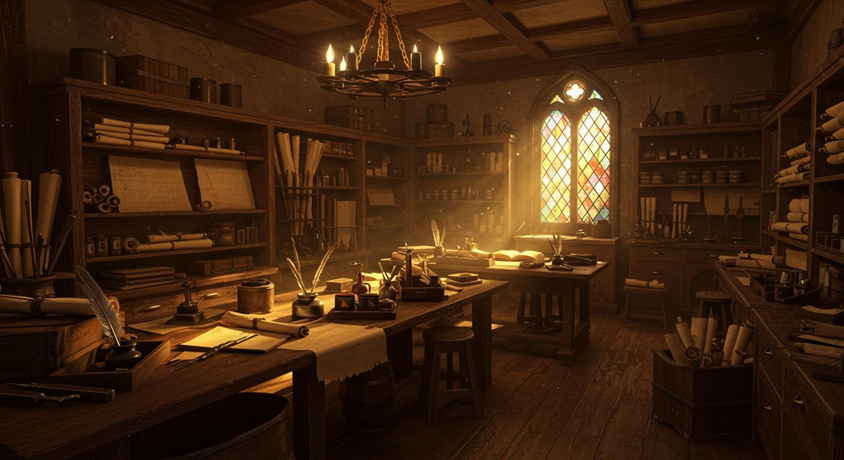

Our Story at Zany Mongoose House of Banners

How Our House Began
Zany Mongoose House of Banners began with a simple belief: even the smallest house deserves a symbol of strength. Inspired by the heraldry of medieval kingdoms, our fictional workshop helps families and adventurers create their own unique house identities.
Our Craft and Purpose
From fierce animal crests to richly colored banners and decorative shields, our workshop celebrates creativity, craftsmanship, and tradition. Each design tells a story of courage, loyalty, and honor.